Créditos: El contenido de este cuaderno ha sido tomado de varias fuentes, pero especialmente de Scikit GStat, Dani Arribas-Bel - University of Liverpool & Sergio Rey - Center for Geospatial Sciences, University of California, Riverside. El compilador se disculpa por cualquier omisión involuntaria y estaría encantado de agregar un reconocimiento.
Kriging con Python#
El tipo de análisis estadístico espacial que trata con variables de campo continuo se denomina geoestadística. La geoestadística se centra en la descripción de la variación espacial en un conjunto de valores observados y en su predicción en ubicaciones no muestreadas. La idea básica de la geoestadística es describir y estimar las correlaciones espaciales en un conjunto de datos puntuales. Aunque la herramienta principal, el variograma, es bastante fácil de implementar y usar, subyacen muchas suposiciones.
La aplicación típica de la geoestadística es la interpolación. Por lo tanto, aunque se utilicen datos puntuales, un concepto básico es entender estos datos puntuales como una muestra de una variable continua (espacialmente) que puede describirse como un campo aleatorio, o para ser más precisos, como un campo aleatorio gaussiano en muchos casos. La suposición más fundamental en geoestadística es que dos valores xi y xi+h son más similares cuanto más pequeño sea h, que es una distancia de separación en el campo aleatorio. En otras palabras, los puntos de observación cercanos mostrarán mayores covarianzas que los puntos distantes. En caso de que esta suposición conceptual fundamental no se cumpla para una variable específica, la geoestadística no será la herramienta correcta para analizar e interpolar dicha variable.
A veces, todo lo que tenemos disponible es un conjunto de puntos con mediciones de la variable de interés que no coinciden con los puntos para los que queremos la información. En esta situación, una solución en la que podemos confiar es la interpolación espacial. Para un campo geográfico continuo medido en un conjunto de puntos, los métodos de “interpolación espacial” nos proporcionan una forma de estimar el valor que tomaría un campo en sitios donde no hemos realizado mediciones.
Existen muchas herramientas de interpolación disponibles, pero generalmente estas herramientas se pueden agrupar en dos categorías: métodos determinísticos y métodos de interpolación.
Objetivos de aprendizaje#
Al finalizar este notebook, el estudiante será capaz de:
Aplicar métodos de interpolación espacial determinísticos: vecino más cercano, IDW, Voronoi y Delaunay.
Calcular e interpretar el variograma experimental como función de la distancia entre puntos.
Ajustar modelos teóricos de variograma (esférico, exponencial, gaussiano) a los datos.
Implementar Kriging Ordinario con
scikit-gstatypykrigepara predecir valores en ubicaciones no muestreadas.Cuantificar y mapear la incertidumbre de las predicciones espaciales mediante la varianza de Kriging.
Requisitos previos: 01_DatosEspaciales — datos espaciales y raster; nociones de estadística básica (correlación, varianza).
Métodos determinísticos#
Interpolación por proximidad#
Fue introducido por Alfred H. Thiessen hace más de un siglo. El objetivo es simple: asignar a todas las ubicaciones no muestreadas el valor de la ubicación muestreada más cercana. Esto genera una superficie teselada donde se conectan líneas que dividen el punto medio entre cada ubicación muestreada, encerrando así un área. Cada área termina rodeando un punto de muestra cuyo valor hereda.

from sklearn.neighbors import KNeighborsRegressor
import geopandas as gpd
import numpy as np
import matplotlib.pyplot as plt
import pandas as pd
import warnings
warnings.filterwarnings('ignore')
airbnbs = gpd.read_file("https://geographicdata.science/book/_downloads/dcd429d1761a2d0efdbc4532e141ba14/regression_db.geojson")
airbnbs.head(2)
| accommodates | bathrooms | bedrooms | beds | neighborhood | pool | d2balboa | coastal | price | log_price | id | pg_Apartment | pg_Condominium | pg_House | pg_Other | pg_Townhouse | rt_Entire_home/apt | rt_Private_room | rt_Shared_room | geometry | |
|---|---|---|---|---|---|---|---|---|---|---|---|---|---|---|---|---|---|---|---|---|
| 0 | 5 | 2.0 | 2.0 | 2.0 | North Hills | 0 | 2.972077 | 0 | 425.0 | 6.052089 | 6 | 0 | 0 | 1 | 0 | 0 | 1 | 0 | 0 | POINT (-117.12971 32.75399) |
| 1 | 6 | 1.0 | 2.0 | 4.0 | Mission Bay | 0 | 11.501385 | 1 | 205.0 | 5.323010 | 5570 | 0 | 1 | 0 | 0 | 0 | 1 | 0 | 0 | POINT (-117.25253 32.78421) |
airbnbs.plot()
<Axes: >

two_bed_homes = airbnbs[airbnbs['bedrooms']==2 & airbnbs['rt_Entire_home/apt']]
two_bed_homes.head(2)
| accommodates | bathrooms | bedrooms | beds | neighborhood | pool | d2balboa | coastal | price | log_price | id | pg_Apartment | pg_Condominium | pg_House | pg_Other | pg_Townhouse | rt_Entire_home/apt | rt_Private_room | rt_Shared_room | geometry | |
|---|---|---|---|---|---|---|---|---|---|---|---|---|---|---|---|---|---|---|---|---|
| 25 | 2 | 1.0 | 0.0 | 1.0 | Pacific Beach | 1 | 13.517509 | 1 | 60.0 | 4.094345 | 132966 | 1 | 0 | 0 | 0 | 0 | 1 | 0 | 0 | POINT (-117.25840 32.80855) |
| 26 | 2 | 1.0 | 0.0 | 1.0 | Ocean Beach | 0 | 9.588707 | 1 | 99.0 | 4.595120 | 141523 | 1 | 0 | 0 | 0 | 0 | 1 | 0 | 0 | POINT (-117.24684 32.75057) |
two_bed_home_locations = np.column_stack((two_bed_homes.geometry.x, two_bed_homes.geometry.y))
two_bed_home_locations[0:10,:]
array([[-117.25839672, 32.80854653],
[-117.24683514, 32.75057048],
[-117.15283799, 32.75173354],
[-117.25159972, 32.76473873],
[-117.24471021, 32.74097711],
[-117.2518276 , 32.93523019],
[-117.14405391, 32.70807602],
[-117.1434337 , 32.74946806],
[-117.13906285, 32.71533892],
[-117.12865252, 32.71993986]])
xmin, ymin, xmax, ymax = airbnbs.total_bounds
x, y = np.meshgrid(np.linspace(xmin, xmax, num=50), np.linspace(ymin,ymax, num=50))
plt.plot(x,y,".", color="red");
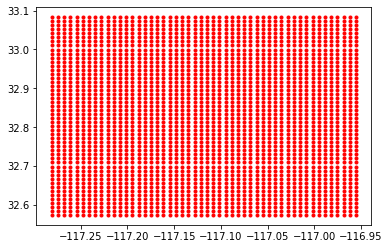
grid_df = gpd.GeoDataFrame(geometry=gpd.points_from_xy(x=x.flatten(), y=y.flatten()))
ax = grid_df.plot(markersize=1)
two_bed_homes.plot(ax=ax, color='red')
<matplotlib.axes._subplots.AxesSubplot at 0x7eff69708390>
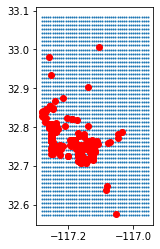
Inverse Distance Weighted (IDW)#
La técnica IDW calcula un valor promedio para las ubicaciones no muestreadas utilizando valores de ubicaciones cercanas ponderadas. Los pesos son proporcionales a la proximidad de los puntos muestreados a la ubicación no muestreada y pueden ser especificados por el coeficiente de potencia IDW.
\(\hat{Z_j} = \frac{\sum_i{Z_i/d^n_{ij}}}{\sum_i{1/d^n_{ij}}}\)
Donde \(Z_j\) es la variable de interes a interpolar a partir de los valores de sus vecinos \(Z_i\), \(d_{ij}\) es la distancia entre el punto \(j\) y cada posición del vecino \(i\) , y \(n\) es un exponente. Cuando \(n=0\) todos los puntos vecinos pesas igual. Cuando \(n\) es grande hace que los puntos cercanos ejerzan una influencia mucho mayor en la ubicación no muestreada que un punto más alejado, lo que resulta en un resultado interpolado que se asemeja a una interpolación de Thiessen.
A continuación se presenta un ejemplo del Vecino mas cercano (Knn) con IDW usando los 5 vecinos mas cercanos. La función weights que implementa el IDW tiene por defecto un valor de \(n=1\)
model = KNeighborsRegressor(n_neighbors=5, weights='distance')
model.fit(two_bed_home_locations, two_bed_homes.price)
KNeighborsRegressor(weights='distance')
grid = np.column_stack((x.flatten(), y.flatten()))
predictions = model.predict(grid)
grid_df.plot(predictions)
<AxesSubplot:>
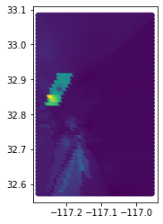
Para implementar en esta librería la función weights con IDW utilizando un valor de \(n\) diferente, se debe crear una función de la siguiente manera la interpolación IDW con \(𝑘=5\) vecinos y exponente \(𝑝=2\):
from functools import partial
def idw_weights(distances, p):
# evita división por cero si hay distancias nulas
distances = distances.copy()
distances[distances == 0] = 1e-12
return 1 / distances**p
model = KNeighborsRegressor(n_neighbors=5, weights=partial(idw_weights, p=2))
Triangulación de Delaunay#
Conecta los puntos que comparten un borde en sus celdas de Voronoi para formar una malla de triángulos que cumple la propiedad del círculo vacío (ningún punto interno al circuncírculo de un triángulo). Para cualquier triángulo hay un círculo único que pasa exactamente por sus tres vértices; se llama circuncírculo y su centro es el punto donde se cortan las mediatrices de los lados. En una triangulación de Delaunay, ningún otro punto de la nube de datos (fuera de esos tres vértices) está dentro de ese circuncírculo.
Voronoi y Delaunay son duales, donde cada arista Voronoi es perpendicular y pasa por el punto medio de la arista Delaunay que conecta los dos sitios vecinos. Cada vértice Voronoi es el centro del circuncírculo de un triángulo Delaunay; a la inversa, cada triángulo Delaunay está formado por los sitios cuyas celdas convergen en ese vértice.
La dualidad Voronoi ↔ Delaunay permite pasar fácilmente de un modelo basado en áreas de influencia (Thiessen/Voronoi) a uno basado en conectividad y mallas (Delaunay), ambos fundamentales en interpolación y análisis espacial.
from scipy.spatial import Delaunay
tri = Delaunay(two_bed_home_locations)
import matplotlib.pyplot as plt
plt.triplot(two_bed_home_locations[:,0], two_bed_home_locations[:,1], tri.simplices)
plt.plot(two_bed_home_locations[:,0], two_bed_home_locations[:,1], 'o');
[<matplotlib.lines.Line2D at 0x1d70bdfbe80>]
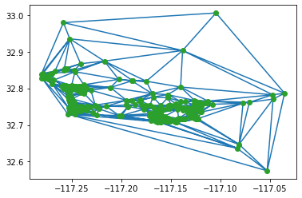
Interpolación de Thiessen (Poligonos de Voronoy)#
Asigna al punto desconocido el valor de la muestra en cuyo polígono de Voronoi cae. Produce un mapa escalonado (función 0-orden). Los poligonos de Voronoy dividen el plano en celdas: cada punto del espacio pertenece al sitio muestreado más cercano. No depende de valores, solo de posiciones. Los poligonso de Voronoy son la base geométrica tanto de la interpolación de Thiessen (valor constante por celda) como de la versión límite del IDW cuando el exponente \(𝑝\) tiende a infinito.
from scipy.spatial import Voronoi, voronoi_plot_2d
vor = Voronoi(two_bed_home_locations)
fig = voronoi_plot_2d(vor)
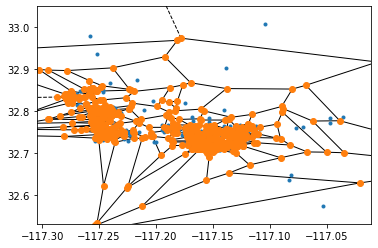
Kriging#
Existen varias formas de interpoladores kriging: ordinario, universal y simple, por nombrar algunos. Esta sección se centrará en la interpolación por kriging ordinario (OK). Esta forma de kriging generalmente involucra cuatro pasos:
Eliminar cualquier tendencia espacial en los datos.
Calcular el variograma experimental, γ, que es una medida de la autocorrelación espacial.
Definir un modelo de variograma experimental que mejor caracterice la autocorrelación espacial en los datos.
Interpolar la superficie utilizando el variograma experimental.
Agregar la superficie interpolada por kriging a la superficie interpolada por tendencia para producir el resultado final.
Nos interesa cómo varían estos valores de atributo a medida que aumenta la distancia entre pares de puntos de ubicación. Podemos calcular la diferencia, \(γ\), en los valores al cuadrar sus diferencias y luego dividir por 2.

El variograma relaciona las distancias de separación por pares de las coordenadas y las relaciona con la semivarianza de los pares de valores correspondientes. El estimador predeterminado utilizado es el estimador de Matheron:
$\gamma = \frac{(Z_2 - Z_1)^2}{2} = \frac{(-1.2 - (1.6))^2}{2} = 3.92$
Experimental variogram#


Modelos de Variograma#

Parámetros#

Scikit-Gstat#
Scikit-gstat es un módulo de análisis de geoestadística con un estilo similar a scipy. Incluye dos clases base: Variogram y OrdinaryKriging. Adicionalmente, se encuentran disponibles diversas clases de variogramas que heredan de Variogram para resolver tareas relacionadas con la dirección o espacio-tiempo. El módulo hace uso de una rica selección de estimadores de semivarianza y funciones de modelos de variogramas, mientras que sigue siendo extensible.
!pip install scikit-gstat
Collecting scikit-gstat
Downloading scikit_gstat-1.0.16-py3-none-any.whl (708 kB)
0.0/708.3 kB ? eta -:--:--
10.2/708.3 kB ? eta -:--:--
10.2/708.3 kB ? eta -:--:--
- 30.7/708.3 kB 217.9 kB/s eta 0:00:04
- 30.7/708.3 kB 217.9 kB/s eta 0:00:04
- 30.7/708.3 kB 217.9 kB/s eta 0:00:04
--- 61.4/708.3 kB 217.9 kB/s eta 0:00:03
--- 71.7/708.3 kB 218.6 kB/s eta 0:00:03
---- 92.2/708.3 kB 275.8 kB/s eta 0:00:03
------ 122.9/708.3 kB 300.4 kB/s eta 0:00:02
------- 153.6/708.3 kB 339.7 kB/s eta 0:00:02
--------- 194.6/708.3 kB 393.0 kB/s eta 0:00:02
----------- 225.3/708.3 kB 416.7 kB/s eta 0:00:02
----------- 225.3/708.3 kB 416.7 kB/s eta 0:00:02
----------- 235.5/708.3 kB 400.1 kB/s eta 0:00:02
------------- 256.0/708.3 kB 393.2 kB/s eta 0:00:02
-------------- 276.5/708.3 kB 405.9 kB/s eta 0:00:02
-------------- 286.7/708.3 kB 401.9 kB/s eta 0:00:02
-------------- 286.7/708.3 kB 401.9 kB/s eta 0:00:02
---------------- 317.4/708.3 kB 385.4 kB/s eta 0:00:02
---------------- 317.4/708.3 kB 385.4 kB/s eta 0:00:02
----------------- 337.9/708.3 kB 367.8 kB/s eta 0:00:02
----------------- 337.9/708.3 kB 367.8 kB/s eta 0:00:02
----------------- 337.9/708.3 kB 367.8 kB/s eta 0:00:02
------------------ 358.4/708.3 kB 332.5 kB/s eta 0:00:02
------------------ 358.4/708.3 kB 332.5 kB/s eta 0:00:02
------------------ 358.4/708.3 kB 332.5 kB/s eta 0:00:02
------------------ 358.4/708.3 kB 332.5 kB/s eta 0:00:02
------------------ 358.4/708.3 kB 332.5 kB/s eta 0:00:02
------------------ 368.6/708.3 kB 290.2 kB/s eta 0:00:02
------------------ 368.6/708.3 kB 290.2 kB/s eta 0:00:02
------------------ 368.6/708.3 kB 290.2 kB/s eta 0:00:02
------------------- 389.1/708.3 kB 275.5 kB/s eta 0:00:02
------------------- 389.1/708.3 kB 275.5 kB/s eta 0:00:02
-------------------- 399.4/708.3 kB 262.0 kB/s eta 0:00:02
-------------------- 399.4/708.3 kB 262.0 kB/s eta 0:00:02
-------------------- 399.4/708.3 kB 262.0 kB/s eta 0:00:02
-------------------- 399.4/708.3 kB 262.0 kB/s eta 0:00:02
-------------------- 409.6/708.3 kB 241.2 kB/s eta 0:00:02
-------------------- 409.6/708.3 kB 241.2 kB/s eta 0:00:02
-------------------- 409.6/708.3 kB 241.2 kB/s eta 0:00:02
--------------------- 430.1/708.3 kB 231.6 kB/s eta 0:00:02
--------------------- 430.1/708.3 kB 231.6 kB/s eta 0:00:02
--------------------- 430.1/708.3 kB 231.6 kB/s eta 0:00:02
---------------------- 450.6/708.3 kB 227.2 kB/s eta 0:00:02
---------------------- 450.6/708.3 kB 227.2 kB/s eta 0:00:02
---------------------- 450.6/708.3 kB 227.2 kB/s eta 0:00:02
---------------------- 450.6/708.3 kB 227.2 kB/s eta 0:00:02
----------------------- 460.8/708.3 kB 215.2 kB/s eta 0:00:02
----------------------- 460.8/708.3 kB 215.2 kB/s eta 0:00:02
----------------------- 460.8/708.3 kB 215.2 kB/s eta 0:00:02
------------------------ 481.3/708.3 kB 212.3 kB/s eta 0:00:02
------------------------ 481.3/708.3 kB 212.3 kB/s eta 0:00:02
------------------------ 491.5/708.3 kB 205.3 kB/s eta 0:00:02
------------------------ 491.5/708.3 kB 205.3 kB/s eta 0:00:02
------------------------ 491.5/708.3 kB 205.3 kB/s eta 0:00:02
-------------------------- 512.0/708.3 kB 203.2 kB/s eta 0:00:01
-------------------------- 512.0/708.3 kB 203.2 kB/s eta 0:00:01
--------------------------- 532.5/708.3 kB 203.8 kB/s eta 0:00:01
--------------------------- 532.5/708.3 kB 203.8 kB/s eta 0:00:01
--------------------------- 542.7/708.3 kB 200.5 kB/s eta 0:00:01
--------------------------- 542.7/708.3 kB 200.5 kB/s eta 0:00:01
--------------------------- 542.7/708.3 kB 200.5 kB/s eta 0:00:01
--------------------------- 542.7/708.3 kB 200.5 kB/s eta 0:00:01
---------------------------- 563.2/708.3 kB 194.4 kB/s eta 0:00:01
---------------------------- 563.2/708.3 kB 194.4 kB/s eta 0:00:01
---------------------------- 563.2/708.3 kB 194.4 kB/s eta 0:00:01
---------------------------- 563.2/708.3 kB 194.4 kB/s eta 0:00:01
----------------------------- 573.4/708.3 kB 185.8 kB/s eta 0:00:01
----------------------------- 573.4/708.3 kB 185.8 kB/s eta 0:00:01
----------------------------- 573.4/708.3 kB 185.8 kB/s eta 0:00:01
------------------------------ 593.9/708.3 kB 183.1 kB/s eta 0:00:01
------------------------------ 593.9/708.3 kB 183.1 kB/s eta 0:00:01
------------------------------ 593.9/708.3 kB 183.1 kB/s eta 0:00:01
------------------------------- 614.4/708.3 kB 184.1 kB/s eta 0:00:01
------------------------------- 624.6/708.3 kB 183.7 kB/s eta 0:00:01
------------------------------- 624.6/708.3 kB 183.7 kB/s eta 0:00:01
-------------------------------- 645.1/708.3 kB 184.7 kB/s eta 0:00:01
-------------------------------- 645.1/708.3 kB 184.7 kB/s eta 0:00:01
-------------------------------- 645.1/708.3 kB 184.7 kB/s eta 0:00:01
--------------------------------- 655.4/708.3 kB 181.9 kB/s eta 0:00:01
--------------------------------- 655.4/708.3 kB 181.9 kB/s eta 0:00:01
--------------------------------- 655.4/708.3 kB 181.9 kB/s eta 0:00:01
---------------------------------- 675.8/708.3 kB 181.3 kB/s eta 0:00:01
---------------------------------- 675.8/708.3 kB 181.3 kB/s eta 0:00:01
---------------------------------- 675.8/708.3 kB 181.3 kB/s eta 0:00:01
----------------------------------- 696.3/708.3 kB 177.7 kB/s eta 0:00:01
----------------------------------- 696.3/708.3 kB 177.7 kB/s eta 0:00:01
----------------------------------- 696.3/708.3 kB 177.7 kB/s eta 0:00:01
------------------------------------ 708.3/708.3 kB 175.9 kB/s eta 0:00:00
Requirement already satisfied: scipy in c:\users\edier\miniconda3\lib\site-packages (from scikit-gstat) (1.11.3)
Requirement already satisfied: numpy in c:\users\edier\miniconda3\lib\site-packages (from scikit-gstat) (1.25.1)
Requirement already satisfied: pandas in c:\users\edier\miniconda3\lib\site-packages (from scikit-gstat) (2.0.3)
Requirement already satisfied: matplotlib in c:\users\edier\miniconda3\lib\site-packages (from scikit-gstat) (3.7.2)
Requirement already satisfied: numba in c:\users\edier\miniconda3\lib\site-packages (from scikit-gstat) (0.58.1)
Requirement already satisfied: scikit-learn in c:\users\edier\miniconda3\lib\site-packages (from scikit-gstat) (1.3.1)
Requirement already satisfied: imageio in c:\users\edier\miniconda3\lib\site-packages (from scikit-gstat) (2.33.0)
Requirement already satisfied: tqdm in c:\users\edier\miniconda3\lib\site-packages (from scikit-gstat) (4.65.0)
Requirement already satisfied: pillow>=8.3.2 in c:\users\edier\miniconda3\lib\site-packages (from imageio->scikit-gstat) (10.0.0)
Requirement already satisfied: contourpy>=1.0.1 in c:\users\edier\miniconda3\lib\site-packages (from matplotlib->scikit-gstat) (1.1.0)
Requirement already satisfied: cycler>=0.10 in c:\users\edier\miniconda3\lib\site-packages (from matplotlib->scikit-gstat) (0.11.0)
Requirement already satisfied: fonttools>=4.22.0 in c:\users\edier\miniconda3\lib\site-packages (from matplotlib->scikit-gstat) (4.41.0)
Requirement already satisfied: kiwisolver>=1.0.1 in c:\users\edier\miniconda3\lib\site-packages (from matplotlib->scikit-gstat) (1.4.4)
Requirement already satisfied: packaging>=20.0 in c:\users\edier\miniconda3\lib\site-packages (from matplotlib->scikit-gstat) (23.0)
Requirement already satisfied: pyparsing<3.1,>=2.3.1 in c:\users\edier\miniconda3\lib\site-packages (from matplotlib->scikit-gstat) (3.0.9)
Requirement already satisfied: python-dateutil>=2.7 in c:\users\edier\appdata\roaming\python\python311\site-packages (from matplotlib->scikit-gstat) (2.8.2)
Requirement already satisfied: llvmlite<0.42,>=0.41.0dev0 in c:\users\edier\miniconda3\lib\site-packages (from numba->scikit-gstat) (0.41.1)
Requirement already satisfied: pytz>=2020.1 in c:\users\edier\miniconda3\lib\site-packages (from pandas->scikit-gstat) (2023.3)
Requirement already satisfied: tzdata>=2022.1 in c:\users\edier\miniconda3\lib\site-packages (from pandas->scikit-gstat) (2023.3)
Requirement already satisfied: joblib>=1.1.1 in c:\users\edier\miniconda3\lib\site-packages (from scikit-learn->scikit-gstat) (1.3.2)
Requirement already satisfied: threadpoolctl>=2.0.0 in c:\users\edier\miniconda3\lib\site-packages (from scikit-learn->scikit-gstat) (3.2.0)
Requirement already satisfied: colorama in c:\users\edier\miniconda3\lib\site-packages (from tqdm->scikit-gstat) (0.4.6)
Requirement already satisfied: six>=1.5 in c:\users\edier\miniconda3\lib\site-packages (from python-dateutil>=2.7->matplotlib->scikit-gstat) (1.16.0)
Installing collected packages: scikit-gstat
Successfully installed scikit-gstat-1.0.16
import skgstat as skg
from skgstat import Variogram, OrdinaryKriging
import pandas as pd
data = pd.read_csv('https://raw.githubusercontent.com/mmaelicke/scikit-gstat/master/docs/data/sample_sr.csv')
data.head(2)
| x | y | z | |
|---|---|---|---|
| 0 | 94 | 20 | -0.394444 |
| 1 | 82 | 37 | -2.283663 |
plt.scatter(data.x, data.y, c=data.z)
plt.colorbar()
<matplotlib.colorbar.Colorbar at 0x1d70c839610>
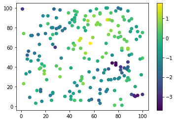
Ya podemos ver mucho desde aquí:
Los valores pequeños parecen concentrarse en la esquina superior izquierda y en la esquina inferior derecha.
Los valores más grandes están dispuestos como una banda desde la esquina inferior izquierda hasta la esquina superior derecha.
La clase Variogram requiere al menos dos argumentos: las coordenadas y los valores observados en esas ubicaciones. También se debe establecer explícitamente el parámetro normalize, ya que en la versión 0.2.8 su valor predeterminado cambia a False. Este atributo afecta únicamente el trazado, no los valores del variograma. Además, el número de bins se establece en 20, ya que tenemos bastantes observaciones y el valor predeterminado de 10 es innecesariamente pequeño. El parámetro maxlag establece la distancia máxima para el último bin. Sabemos por el gráfico anterior que valores mayores a 60 unidades no son realmente significativos. Para más detalles, por favor consulta la Guía del Usuario y el Libro.
V = Variogram(data[['x', 'y']].values, data.z.values, estimator="entropy", model="spherical", maxlag=60, n_lags=20)
V.plot();
C:\Users\usuario\miniconda3\envs\geospatial\lib\site-packages\skgstat\plotting\variogram_plot.py:123: UserWarning: Matplotlib is currently using module://ipykernel.pylab.backend_inline, which is a non-GUI backend, so cannot show the figure.
fig.show()
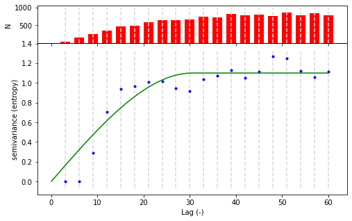
print(V.describe())
{'model': 'spherical', 'estimator': 'matheron', 'dist_func': 'euclidean', 'normalized_effective_range': 2281.7783283856843, 'normalized_sill': 1.8366472766475495, 'normalized_nugget': 0, 'effective_range': 38.02963880642807, 'sill': 1.2512444944568355, 'nugget': 0, 'params': {'estimator': 'matheron', 'model': 'spherical', 'dist_func': 'euclidean', 'bin_func': 'even', 'normalize': False, 'fit_method': 'trf', 'fit_sigma': None, 'use_nugget': False, 'maxlag': 60, 'n_lags': 20, 'verbose': False}, 'kwargs': {}}
V.distance_difference_plot();
C:\Users\usuario\miniconda3\envs\geospatial\lib\site-packages\skgstat\plotting\variogram_dd_plot.py:49: UserWarning: Matplotlib is currently using module://ipykernel.pylab.backend_inline, which is a non-GUI backend, so cannot show the figure.
fig.show()
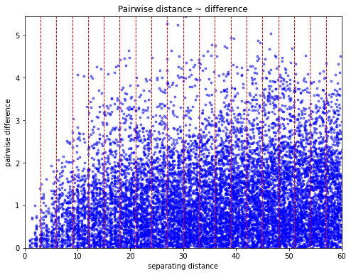
# apply binning
bin, _ = skg.binning.even_width_lags(V.distance, 20, None)
# get the histogram
plt.hist(V.distance,bins=20)
(array([ 96., 191., 285., 378., 466., 516., 625., 610., 619., 714., 705.,
717., 802., 756., 752., 793., 837., 761., 836., 760.]),
array([ 1. , 3.95, 6.9 , 9.85, 12.8 , 15.75, 18.7 , 21.65, 24.6 ,
27.55, 30.5 , 33.45, 36.4 , 39.35, 42.3 , 45.25, 48.2 , 51.15,
54.1 , 57.05, 60. ]),
<BarContainer object of 20 artists>)
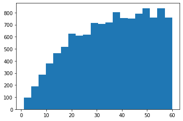
El subgráfico superior muestra el histograma del conteo de pares de puntos en cada clase de retraso (lag). Se pueden observar varias cosas aquí:
Como era de esperarse, existe una clara dependencia espacial, ya que la semivarianza aumenta con la distancia (puntos azules). El modelo de variograma esférico predeterminado está bien ajustado a los datos experimentales. La forma de la dependencia no se captura del todo bien, pero es suficientemente aceptable para este ejemplo.
El valor de meseta (sill) del variograma debería corresponder con la varianza del campo. El campo es desconocido, pero podemos comparar la meseta con la varianza de la muestra:
print(data.z.var()) #sample variance
V.describe()['sill'] # Variogram sill
1.104387967773688
1.2553698540989082
La clase Kriging ahora usará el Variograma de arriba para estimar los pesos de Kriging para cada celda de la cuadrícula. Esto se realiza resolviendo un sistema de ecuaciones lineales. Para una ubicación no observada \(s_0\), podemos usar las distancias a 5 puntos de observación y construir el sistema de la siguiente manera:
En consecuencia, la clase OrdinaryKriging necesita un objeto Variogram como atributo obligatorio. Dos atributos opcionales muy importantes son min_points y max_points, los cuales limitan el tamaño del sistema de ecuaciones de Kriging. Como tenemos 200 observaciones, podemos requerir al menos 5 vecinos dentro del rango. Más de 15 solo ralentizaría innecesariamente la computación. El atributo mode='exact' indicará a la clase que construya y resuelva el sistema anterior para cada ubicación.
ok = OrdinaryKriging(V, min_points=5, max_points=15, mode='exact')
El método transform aplicará la interpolación para los arreglos de coordenadas pasados. Requiere cada dimensión como un solo arreglo 1D. Podemos fácilmente construir una malla (meshgrid) de 100x100 coordenadas y pasarlas al interpolador. Para recibir un resultado en 2D, simplemente podemos reestructurar el resultado. El error de Kriging estará disponible como el atributo sigma del interpolador.
# build the target grid
xx, yy = np.mgrid[0:99:100j, 0:99:100j]
field = ok.transform(xx.flatten(), yy.flatten()).reshape(xx.shape)
s2 = ok.sigma.reshape(xx.shape)
fig, axes = plt.subplots(1, 2, figsize=(16, 8))
art = axes[0].matshow(field.T, origin='lower', cmap='plasma')
axes[0].set_title('Interpolation')
axes[0].plot(data.x, data.y, '+k')
axes[0].set_xlim((0,100))
axes[0].set_ylim((0,100))
plt.colorbar(art, ax=axes[0])
art = axes[1].matshow(s2.T, origin='lower', cmap='YlGn_r')
axes[1].set_title('Kriging Error')
plt.colorbar(art, ax=axes[1])
axes[1].plot(data.x, data.y, '+w')
axes[1].set_xlim((0,100))
axes[1].set_ylim((0,100));
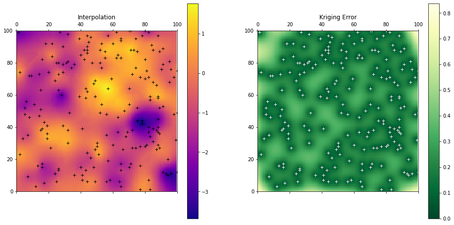
Pykrige#
!pip install pykrige
Collecting pykrige
Downloading PyKrige-1.7.1-cp311-cp311-win_amd64.whl (183 kB)
0.0/183.9 kB ? eta -:--:--
-- 10.2/183.9 kB ? eta -:--:--
-- 10.2/183.9 kB ? eta -:--:--
-- 10.2/183.9 kB ? eta -:--:--
-- 10.2/183.9 kB ? eta -:--:--
-- 10.2/183.9 kB ? eta -:--:--
------ 30.7/183.9 kB 93.5 kB/s eta 0:00:02
-------- 41.0/183.9 kB 115.9 kB/s eta 0:00:02
------------ 61.4/183.9 kB 164.1 kB/s eta 0:00:01
---------------------- 112.6/183.9 kB 273.1 kB/s eta 0:00:01
------------------------ 122.9/183.9 kB 266.9 kB/s eta 0:00:01
------------------------------ 153.6/183.9 kB 305.7 kB/s eta 0:00:01
------------------------------------ 183.9/183.9 kB 327.1 kB/s eta 0:00:00
Requirement already satisfied: numpy<2,>=1.14.5 in c:\users\edier\miniconda3\lib\site-packages (from pykrige) (1.25.1)
Requirement already satisfied: scipy<2,>=1.1.0 in c:\users\edier\miniconda3\lib\site-packages (from pykrige) (1.11.3)
Installing collected packages: pykrige
Successfully installed pykrige-1.7.1
import numpy as np
import pandas as pd
import matplotlib.pyplot as plt
# Generate synthetic data: 50 points
np.random.seed(42) # For reproducibility
x_coords = np.random.uniform(0, 100, 50)
y_coords = np.random.uniform(0, 100, 50)
values = np.sin(x_coords * 0.1) + np.cos(y_coords * 0.1) + np.random.normal(0, 0.1, 50)
# Plotting the synthetic data
plt.scatter(x_coords, y_coords, c=values, cmap='viridis')
plt.colorbar(label='Value')
plt.xlabel('X Coordinate')
plt.ylabel('Y Coordinate')
plt.title('Synthetic Spatial Data')
plt.show()
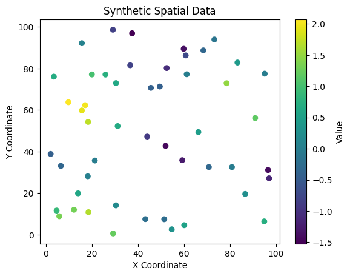
from pykrige.ok import OrdinaryKriging
from pykrige.kriging_tools import write_asc_grid
import pykrige.kriging_tools as kt
# Create the Ordinary Kriging object
OK = OrdinaryKriging(
x_coords,
y_coords,
values,
variogram_model='linear',
verbose=False,
enable_plotting=False
)
# Generate a grid
gridx = np.linspace(0, 100, 100)
gridy = np.linspace(0, 100, 100)
# Perform kriging
z, ss = OK.execute('grid', gridx, gridy)
# z is the interpolated values
# ss is the squared error
plt.figure(figsize=(10, 8))
plt.imshow(z, extent=(0, 100, 0, 100), origin='lower', cmap='viridis')
plt.scatter(x_coords, y_coords, c='red') # original data points
plt.colorbar(label='Interpolated Value')
plt.title('Kriging Interpolation of Synthetic Data')
plt.xlabel('X Coordinate')
plt.ylabel('Y Coordinate')
plt.show()
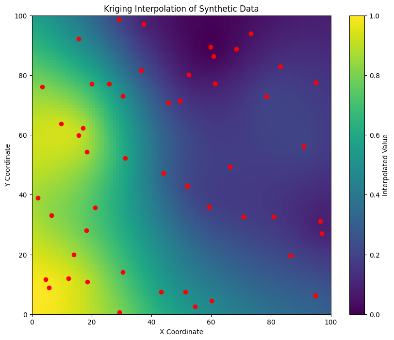
Ejemplo Kriging universal#
El Kriging Universal se utiliza cuando se sospecha que existe una tendencia espacial en los datos, es decir, que la media de la variable no es constante en todo el dominio de estudio. En contraste con el Kriging Ordinario, que asume una media constante, el Kriging Universal permite modelar esta tendencia espacial y obtener mejores predicciones en presencia de variaciones en la media. En kriging universal (o regression-kriging/kriging con deriva externa) la predicción en un punto nuevo \(𝑠_0\) se descompone en dos piezas:
donde \(𝑒(𝑠_𝑖)=𝑍(𝑠_𝑖)−𝑚(𝑠_𝑖)\)
import numpy as np
import pandas as pd
# -----------------------------
# 1. Toy data: coordinates (x,y), covariate (elevation) and target variable (temperature)
# -----------------------------
data = pd.DataFrame({
"x": [0.0, 1.0, 0.0],
"y": [0.0, 0.0, 1.0],
"elev":[100, 110, 105],
"temp":[10.0, 12.0, 13.0]
}, index=["A","B","C"])
print("Observations")
print(data, "\n")
# target location
x0, y0, elev0 = 0.5, 0.5, 115
print(f"Target point P = ({x0},{y0}), elevation = {elev0} m\n")
# -----------------------------
# 2. Trend (drift): linear regression temp ~ elev
# -----------------------------
e = data["elev"].values
z = data["temp"].values
beta1 = np.cov(e, z, bias=True)[0,1] / np.var(e)
beta0 = z.mean() - beta1*e.mean()
print(f"Trend model m(s) = β0 + β1*elev\nβ0 = {beta0:.4f}, β1 = {beta1:.4f}")
m = beta0 + beta1*e # trend at sample points
res = z - m # residuals
print("\nTrend at sample points m_i:", np.round(m,4))
print("Residuals e_i = z_i - m_i:", np.round(res,4), "\n")
# trend at target
m0 = beta0 + beta1*elev0
print(f"Trend at target m0 = {m0:.4f}\n")
# -----------------------------
# 3. Empirical semivariogram of residuals
# γ_ij = 0.5*(e_i - e_j)^2
# -----------------------------
coords = data[["x","y"]].values
pairs = []
gamma_ij = []
dist_ij = []
n = len(coords)
for i in range(n):
for j in range(i+1, n):
h = np.linalg.norm(coords[i]-coords[j])
g = 0.5*(res[i]-res[j])**2
pairs.append(f"{data.index[i]}-{data.index[j]}")
dist_ij.append(h)
gamma_ij.append(g)
df_emp = pd.DataFrame({"pair":pairs, "dist":dist_ij, "gamma":gamma_ij})
print("Empirical semi‑variogram (residuals):")
print(df_emp.to_string(index=False), "\n")
# -----------------------------
# 4. Fit a very simple variogram model: linear γ(h)=a*h
# a = average(γ/h) over all pairs
# -----------------------------
a = np.mean(np.array(gamma_ij) / np.array(dist_ij))
print(f"Linear model γ(h) = a·h with a = {a:.4f}\n")
def gamma_linear(h, a=a):
return a*h
# -----------------------------
# 5. Build Universal Kriging system
# [ Γ F ][λ] = [γ0]
# [ Fᵀ 0 ][μ] [f0]
# -----------------------------
# Γ matrix
Gamma = np.zeros((n,n))
for i in range(n):
for j in range(n):
h = np.linalg.norm(coords[i]-coords[j])
Gamma[i,j] = gamma_linear(h) # γ(h)
# F matrix (intercept + covariate)
F = np.column_stack((np.ones(n), e))
# right‑hand side
gamma0 = np.array([gamma_linear(np.linalg.norm([x0,y0]-coords[i])) for i in range(n)])
f0 = np.array([1, elev0])
# assemble system
A = np.block([[Gamma, F],
[F.T, np.zeros((2,2))]])
b = np.concatenate([gamma0, f0])
# solve
solution = np.linalg.solve(A, b)
lam = solution[:n] # kriging weights
mu = solution[n:] # Lagrange multipliers
print("Kriging system solution")
print("λ (weights):", np.round(lam,4))
print("μ (multipliers):", np.round(mu,4), "\n")
# -----------------------------
# 6. Prediction and variance
# -----------------------------
Zhat = m0 + np.dot(lam, res) # universal kriging estimator
sigma2_k = np.dot(lam, gamma0) + np.dot(mu, f0) # kriging variance
print(f"Predicted temperature at P: Ẑ = {Zhat:.2f} °C")
print(f"Kriging variance at P : σ²_k = {sigma2_k:.3f}")
Paso |
¿Qué hicimos? |
Resultado clave |
|---|---|---|
1. Datos |
3 puntos con \(x,y\), elevación y temperatura |
|
2. Tendencia (drift) |
Ajustamos \(m(\mathbf{s})=\beta_0+\beta_1\,\text{elev}\) |
\(\hat\beta_0=-9.33,\;\hat\beta_1=0.20\) |
3. Residuos |
\(e_i = Z_i - \hat m_i\) |
\([-0.67,\,-0.67,\,1.33]\) |
4. Semivariograma empírico |
\(\hat\gamma_{ij}=0.5\,(e_i-e_j)^2\) |
ver tabla “Empirical semi-variogram” |
5. Modelo de variograma |
Ajuste lineal \(\gamma(h)=a\,h\) |
\(a\approx1.14\) |
6. Sistema de kriging universal |
construimos la matriz \([\Gamma\;F;F^\top\;0]\) y la resolvemos |
pesos \(\lambda=[-0.79,\,1.21,\,0.59]\) |
7. Predicción |
\(\hat Z(P)=\hat m_0+\sum \lambda_i e_i\) |
\(\hat Z=14.17^{\circ}\text{C}\) |
8. Varianza |
\(\sigma_k^2=\lambda^\top\gamma_0+\mu^\top f_0\) |
\(\sigma_k^2=2.57\) |
Actividades#
Comparación de métodos de interpolación: Usando los datos de precipitación del dataset, aplica cuatro métodos de interpolación: Vecino más cercano, IDW (p=2), Triangulación de Delaunay y Kriging Ordinario. Para evaluar cada método, usa validación cruzada leave-one-out y reporta el RMSE. ¿Cuál método produce el menor error?
Ajuste del variograma: Para el mismo dataset de precipitación, calcula el variograma experimental y ajusta tres modelos teóricos: Esférico, Exponencial y Gaussiano. Compara el ajuste visual de cada modelo. ¿Cómo cambian las predicciones de Kriging según el modelo de variograma elegido?
Interpolación con incertidumbre: Con el Kriging Ordinario, además de los valores predichos, extrae la varianza de predicción (kriging variance). Mapea tanto la predicción como la incertidumbre. ¿En qué zonas es mayor la incertidumbre y por qué? ¿Cómo podría usarse este mapa de incertidumbre en la toma de decisiones?
Universal Kriging: Ajusta un Universal Kriging incorporando la elevación como tendencia de primer orden (drift). Compara las predicciones con el Kriging Ordinario. En zonas de alta montaña, ¿mejora significativamente el ajuste al incluir la tendencia altitudinal?
Recursos adicionales#
Documentación oficial#
Lecturas recomendadas#
Cressie, N. (1993). Statistics for Spatial Data (rev. ed.). Wiley.
Goovaerts, P. (1997). Geostatistics for Natural Resources Evaluation. Oxford University Press.
Matheron, G. (1963). Principles of geostatistics. Economic Geology, 58(8), 1246–1266.
Webster, R. & Oliver, M. A. (2007). Geostatistics for Environmental Scientists (2nd ed.). Wiley.
Pebesma, E. J. (2004). Multivariable geostatistics in S: The gstat package. Computers & Geosciences, 30(7), 683–691.